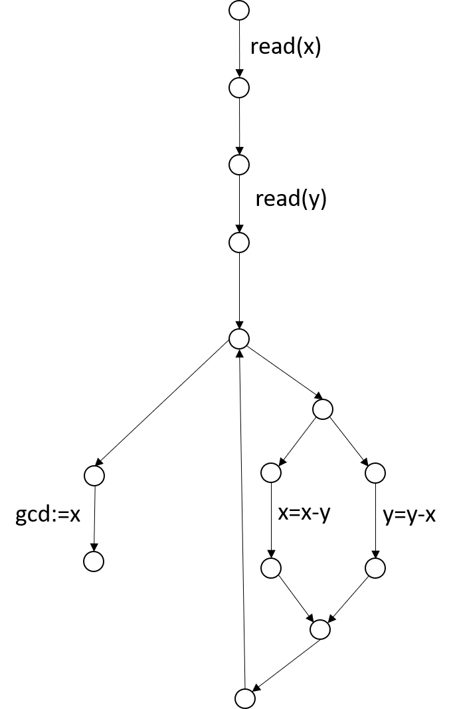
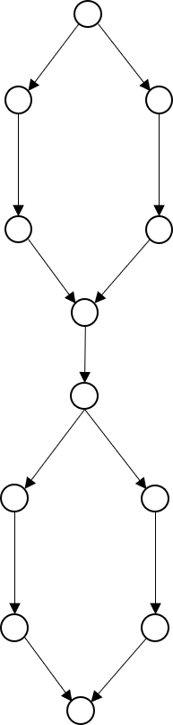

Whitebox testing
Marcel Lüthi
Departement Mathematik und Informatik
Übersicht

Whitebox testing
begin
read (x);
read (y);
while x != y loop
if x > y then
x := x - y;
else
y := y - x;
end if;
end loop;
gcd := x;
end;
- Ableiten von Testfällen anhand interner Struktur
- Spezifikation nicht im Vordergrund.
- Wir testen die Implementation
Struktur definiert Äquivalenzklassen.
Überdeckung (coverage)
Überdeckungskriterium: Falls signifikante Teile des Codes nicht getestet sind, ist das Testen inadäquat.
- Kriterien
- Anweisungsüberdeckung
- Zweigüberdeckung
- Bedingungsüberdeckung
- Pfadüberdeckung
Anweisungsüberdeckung
Wähle Testmenge $T$ so, dass jedes Statement in Programm $P$ mindestens einmal ausgeführt wird (für beliebiges $d \in T$)
read (x); read (y);
if x > 0 then
write ("1");
else
write ("2");
end if;
if y > 0 then
write ("3");
else
write ("4");
end if;
Anweisungsüberdeckung
read (x); read (y);
if x > 0 then
write ("1");
else
write ("2");
end if;
if y > 0 then
write ("3");
else
write ("4");
end if;
Vollständige Abdeckung:
\[
\begin{split}
\{ &x = 2, y = 3; x = - 13, y = 51; \\
&x = 97, y = 17; x = - 1, y = - 1\}
\end{split}
\]
Minimale Testmenge mit vollständiger Abdeckung
\[ \{x = - 13, y = 51; x = 2, y = - 3 \} \]
Schwäche von Kriterium
if x < 0 then
x = -x
end if
z = x;
- $x = -3$ deckt alle Statements ab
- Problem: Kein Test für $x$ positiv.
Zweigüberdeckung (Edge coverage)
Die Testmenge $T$ wird so gewählt, dass jeder Zweig des Kontrollflusses mindestens einmal durchlaufen wird.
- Formalisiert durch Kontrollflussgraphen
- Jede Kante muss abgedeckt sein

Kontrollflussgraph

- Graph $G$:
Anweisung, Sequenz, Verzweigung oder Loop - Induktion:
Graph enhält Subgraphen (Codeblöcke)
Kontrollflussgraph: Vereinfachung

Beispiel: Euklid's Algorithmus
begin
read (x);
read (y);
while x != y loop
if x > y then
x := x - y;
else
y := y - x;
end if;
end loop;
gcd := x;
end;

Schwächen vom Kriterium
found := false;
counter := 1;
while (not found) and (counter < size(hackstack)) loop
if haystack(counter) = needle then
found := true;
end if
counter := counter + 1;
end loop
- Testfälle:
- haystack = [], needle = 1
- haystack = [7, 3, 1], needle = 3
- Problem: Off by 1 error ($ <$ statt $<=$)
Bedingungsüberdeckung
Die Testmenge $T$ wird so gewählt, dass jeder Zweig des Kontrollflusses mindestens einmal durchlaufen wird und alle möglichen Elemente von zusammengesetzten Bedingungen mindestens einmal aktiv sind.
if (c1 and c2) then
st;
else
sf;
end if
- Stärkeres Kriterium als Zweigüberdeckung.
Schwächen vom Kriterium
if x != 0 then
y := 5;
else
z := z - x;
end if;
if z > 1 then
z := z / x
else
z := 0;
end if;
- Testfälle: x = 0, z = 1; x=1, z = 3
- Division durch 0 für x =0, z= 3 wird nicht entdeckt
Pfadüberdeckung
Die Testmenge $T$ wird gewählt, dass jeder Pfad zwischen Initial und Endknoten durchlaufen wird.
- Bestes Kriterium - aber nicht praktikabel
- Nützliches Ideal, welches angestrebt werden sollte.
- Kreativität vom Tester gefordert

Auch perfekte Überdeckung kann nicht verhindern, dass Teile der Spezifikation nicht implementiert sind.